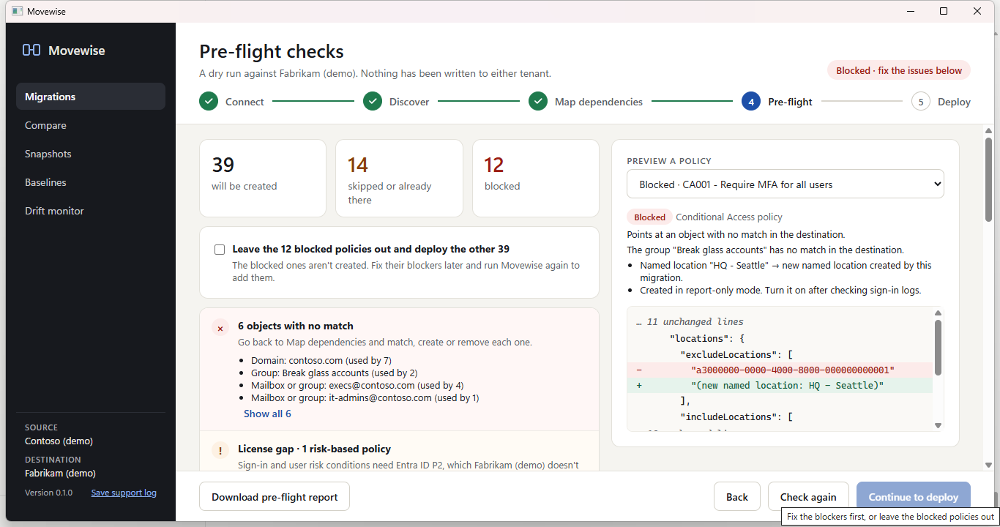

Why Conditional Access is hard to migrate
A Conditional Access policy is mostly references. It includes and excludes groups, users and directory roles by object ID, targets apps by app ID, and points at named locations and authentication strengths by ID. Exporting the JSON and importing it into another tenant fails, or worse, succeeds and quietly applies to nobody, because none of those IDs exist in the destination.
The exclusions matter most. If a break-glass group or an emergency account isn't excluded in the new tenant, a policy that requires MFA or blocks legacy authentication can lock out the people who are supposed to fix it.
How Movewise migrates Conditional Access
- Reads the policies and everything they reference: groups, users, roles, apps, named locations and custom authentication strengths.
- Matches each reference in the destination. Groups by name, then mail nickname. Users by email, then username. Apps by app ID. Named locations and authentication strengths by name, or created along with the policies.
- Lets you decide the rest on the Map screen: match to an existing object, create it in the destination, or remove it from the policies. Mappings export to and import from CSV.
- Rewrites each policy with the destination's IDs and shows a before and after view of every change.
- Creates every Conditional Access policy in report-only mode, so you can check sign-in logs before turning it on.

What pre-flight checks before anything is created
- References with no match in the destination: the policy is blocked until they're matched, created or removed.
- Exclusions that land on a group this migration creates. A new group has no members, so it excludes nobody until you add them.
- Exclusions you chose to remove, which make a policy apply to more people than in the source.
- Policies that include all users and exclude nobody.
- License gaps: risk-based conditions need Entra ID P2, so those policies are created switched off when the destination doesn't have it.
- Name conflicts with policies already in the destination: skip, rename, or update the existing policy in place.
- The admin roles needed in the destination.
Other Entra ID settings
Alongside Conditional Access, Movewise migrates Entra ID user settings, the authentication methods policy with each sign-in method (and warns when a method would be switched off or narrowed), cross-tenant access default and partner settings, and custom admin roles. Settings every tenant already has are changed to match the source rather than created, and only settings that differ are changed.
Rolling back
Every deployment is a run that can be rolled back. Rollback deletes only the policies and objects the run created, and puts back the earlier values of settings it changed. Anything that was in the destination before is never deleted.